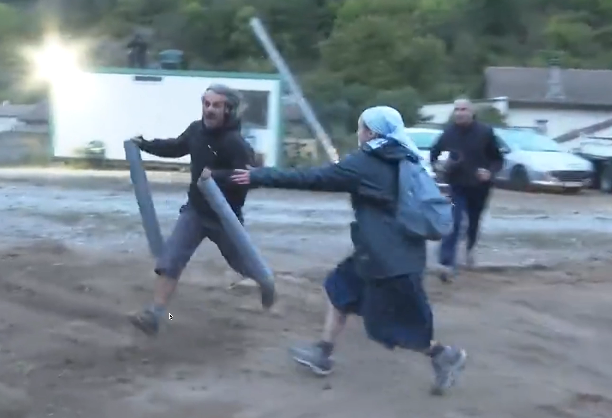

I thought I’d do a short piece on something lighter but based on a news item. Naturally, the
fodder
comes from the New York Times, where the opening sentence says a lot:
When climate activists protesting the building of a huge church complex in a natural park in the South of France scaled the construction site, the nuns gave chase.
The imagery is compelling, and
there is a video
! The article continues:
One sister grabbed an environmentalist climbing an excavator but lost her grip and fell rolling into a pit. Two other nuns tried to hold down a protester, who shook loose. Sister Benoîte raced and tackled a running activist — and pushed him into a ditch.
“They lost,” said Sister Gaetane, who had also grabbed a protester. “We tried not to cause any injuries.”

Credit Nicolas Ferro
If you have any residual doubt, this is definitive proof that “environmentalism” and “Catholicism” are both religious orders. Consider that fact before passing judgment on climate approaches.
I think I’ll leave it at that.
Until next week,
Thank you for reading Healing the Earth with Technology. This post is public, so feel free to share it.